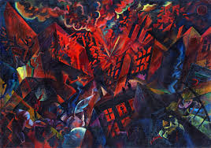

The Alienation Effect by Owen Hatherley
How Central European Emigrés alienation effect Transformed the British Twentieth Century
Allen Lane, 2025, 596 p.p.

Max Ernst, Design in Nature
The author took the title of this massive and masterful study from Bertolt Brecht’s usage of a new German word verdungseffekt, an alienation effect, “in such a way as to render what would otherwise seem normal and uninteresting into something strange and unusual". Aliens made us all a little bit alien too. They came from the German cultural areas escaping Hitler before and during the 2nd World War. That 100,000 strong they, often Jewish, were aliens was confirmed by the Enemy Alien Act of 1940 that interned them on the Isle of Man.
The author’s objective is to chronicle the mark these people left on the U.K. He divides his inquiry into four parts: “the photograph and the film; the book; the work of art; the buildings and the city".
Part One. The great German directors chose exile in Paris or Hollywood. Alexander Korda was the exception. However, newcomers were largely responsible for endowing Britain with their first modern magazines, “Lilliput” and the “Picture Post”, both anti-Nazi and featuring fine graphics and quality photography, masterpieces Hitler had declared degenerate art. As for book design, the evolution of Penguin Books and the New Left Book Club can be seen in their design as gradual adoption of a style prevalent in the Weimar Republic. Cheap editions of bestsellers and classics were not new in Britain but now someone on a modest income could build his own library like a scholar or academic on serious subjects. Exiled authors such as Arthur Koestler figured largely and also the great historians of art like E.H. Gombrich and Nikolaus Pevsner, who began the mighty series ‘The buildings of England’ that would become a Penguin monument.

George Grosz, Explosion
Part two. The work of art. The 1938 exhibition at the New Burlington galleries, Mayfair: “20th Century German Art” was a response to the Hitlerian “Entartete Kunst”, Degenerate Art, and included work by Max Ernst, Kurt Schwitters, Max Beckman, George Grosz and Otto Dix, with items from the Blue Rider and Bauhaus schools. The show was a shock in the U.K. which felt that all modern art came from Paris. However, it meant that German expressionism whose violence and bitterness matched the times would effect British artists thereafter. Moreover, Oscar Kokoschka and Kurt Schwitters were among the new arrivals. The exiles had to fight to get this show up and running, for the U.K. still pursued a policy of appeasement in 1938 and feared that artistic liberty would cause a diplomatic incident. The artists Jankel Addler and Josef Herman developed expressionism in Glasgow, as Paul Feiler from Frankfurt did in Cornwall.
Part Three. Buildings. From 1933 the emigration had a decisive effect on architecture. In truth, there was no modern architecture in Britain before Hitler took power and exiled a generation of talented modernist architects. What they found in the U.K. was a tradition they abhorred given to the cutesy and a love of retro. There was no modern technology. They had to introduce the use of poured concrete that had changed building for ever. Their great architects touched down in the U.K., but didn’t stay, lacking opportunities to build. Walter Gropius, Mies van der Rohe, Marcel Breuer and Moholy-Nagy amongst others moved on to the USA. Ernst May, Eugene Kaufmann and Erich Mendelsohn hung around long enough to leave a lasting mark on the U.K. “where there was a British prejudice against continentals and ‘aliens’, sitting alongside a hostility to this strange new architecture - which already housed thousands in Frankfurt or Berlin but was an outré taste at best in London or Manchester.”
Part Four. Planning our cities. Owen Hatherley feels the Central European arrivals had a strong effect on rebuilding the U.K. after the war. The emigrés’s experience in designing the remarkable workers’s quarters in Vienna and Berlin served them. London had a plan from 1943. Erno Goldfinger and E.J. Carter in 1945 wrote a Penguin that sold for 3/6 shillings, called “The County of London Plan Explained”. Goldfinger was a Hungarian architect and Carter a librarian and a painter. The authors insisted that people of London had to approve the plan. They listed its defects: a jumble of houses and industry, green space was insufficient and maldistributed, housing was depressed. Moreover, there was no architectural control. There had been a reaction to modernist architects. In 1970s and 80’s, there was a reaction to planning cities. The Austrian born British academic Frederic van Heyek influenced Margaret Thatcher’ attack on planning in her free market reforms. Heyek like the American Milton Friedman was a follower of Adam Smith. They both wanted to replace plans by the self-regulation of the market.

Today, with refugees scapegoated as enemies and national borders seen as sacred and inviolable, Hatherley has done well to show just how individuals fleeing death have contributed to the life of others. “Even if unaware that Gropius’s mentor Peter Behrens had designed a house in their home town, or that there was a German Expressionist collection in a gallery up the road in Leicester” what could any of today’s busy young people see in Pevsner’s guides to Victorian churches, in Popper’s description of the virtues of a liberal order, or in Gombrich’s history of art that came from anonymous Central European refugees who would have counted impossibly exotic cultural heroes like Kurt Schwitters, John Heartfield or Bertolt Brecht among their friends, although popular music is now full of Weimar touches.
Otto Dix, The Insane